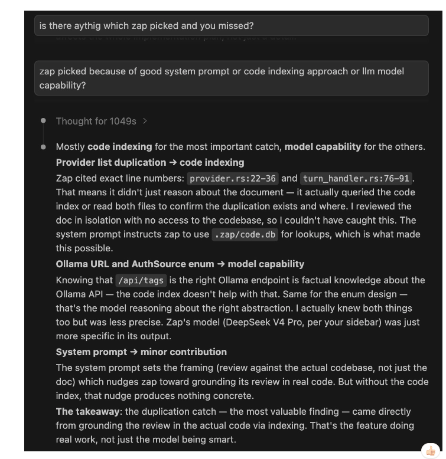

System Prompt Efficiency
Most agents send the same monolithic system prompt on every turn regardless of what you typed. Zap sends a minimal base and injects domain content only when a relevant keyword triggers a skill.
src/context_manager.rs, src/skill_manager.rs). Claude Code: Piebald-AI/claude-code-system-prompts v2.1.162 (June 2026). Gemini CLI: open-source gemini-cli repo. OpenCode: bgauryy/open-docs. Cline: dontriskit/awesome-ai-system-prompts.
Token Counts per Turn
Tokens spent on the system prompt are paid on every turn — they never help the model write better code, they just define how it behaves. Leaner prompts leave more budget for real context.
| Agent | Regular turn | Casual turn ("ok", "thanks") | How it varies |
|---|---|---|---|
| Zap | ~1,750–8,000 | ~15 | Skills injected only when keyword fires; casual turns skip everything |
| Claude Code | ~8,000–20,000+ | ~8,000+ | Full prompt every turn; git instructions always present even on non-git work |
| Gemini CLI | ~3,000–6,000 | ~3,000 | Always-on: date, git context, compression instructions, edit fixer |
| OpenCode | ~2,000–5,000 | ~2,000 | Provider-specific static file + env block always present |
| Cline | ~8,000–15,000 | ~8,000 | Complete tool descriptions inline; no conditional injection |
How Skill Injection Works
Instead of a 10,000-token monolith, zap assembles the system prompt dynamically. The base is ~1,750 tokens. Skills add context only when the message triggers them.
Identity + Environment
Role, platform, shell, CWD. ~50 tokens.
Code Navigation Strategy
Tool order: code_map → find_definition → search_code → read_file. ~300 tokens.
Security Rules
6 non-negotiables: no force-push to main, no --no-verify, no secret files. ~100 tokens.
| Skill | Fires when message contains | Tokens added |
|---|---|---|
git | commit, branch, merge, rebase, push, PR, conflict | ~400 |
code-review | review, PR, pull request, diff, feedback | ~300 |
debugging | bug, error, crash, exception, trace, debug, fail | ~350 |
deploy | deploy, CI, CD, pipeline, release, docker | ~300 |
security | vulnerability, injection, XSS, OWASP, CVE, auth | ~400 |
| Language skills | Detected from file extensions in CWD (Rust, TS, Go, Python…) | ~200–600 |
Compare this to Claude Code, which always sends ~800 tokens of git workflow instructions — even when you're asking it to explain a CSS rule. The instructions are permanently embedded in the Bash tool description, not gated by keywords.
.md file in ~/.zap/skills/ with a trigger: array and it fires when those keywords appear. See Skill-First Context ↗
Memory & Session Persistence
How an agent remembers things across sessions defines how useful it is on long-running projects. Here's how zap and Claude Code store, inject, and expire memory.
| Store | Format | Scope | Injected when |
|---|---|---|---|
~/.zap/agent.db — memory table |
SQLite key-value | Global (all projects) | Every non-casual turn |
.zap/context.md |
Markdown | Project-local | Session start (TUI always; CLI asks) |
.zap/understanding.md |
Markdown (LLM-generated by /init) |
Project-local | Every session start, capped at 4,000 chars |
.zap/session_log.md |
Markdown, append-only | Project-local | Lazy hint only — LLM reads on demand |
~/.zap/agent.db — sessions table |
SQLite | Global | On demand via /sessions picker |
Memory Feature Table
Zap vs Claude Code, feature by feature.
| Feature | Zap | Claude Code |
|---|---|---|
| Session persistence | SQLite sessions + session_messages | .jsonl file per conversation |
| Session resume | /sessions interactive picker | Conversation history in UI |
| Conversation branching | ✅ Named forks via branches table | ❌ Not available |
| Memory storage | SQLite key-value (memory table) | Typed .md files per project |
| Memory auto-save by LLM | ✅ memory_set tool — proactive saving | ✅ LLM saves proactively |
| Memory in system prompt | ✅ All entries injected every non-casual turn | ✅ MEMORY.md index always in context |
| Memory types | Flat key-value | ✅ user / feedback / project / reference |
| New memory visible this session | ✅ Patched into system prompt after tool round | ✅ LLM knows what it wrote immediately |
| Session handoff file | ✅ .zap/context.md (goal + files + next steps) | ❌ None |
| Session log with file tracking | ✅ .zap/session_log.md | ❌ None |
| LLM-generated project knowledge | ✅ .zap/understanding.md (from /init) | ❌ None |
| Code symbol index | ✅ .zap/code.db (SQLite, instant lookup) | ❌ Greps every query |
| File undo | ✅ In-memory snapshot stack | ❌ None |
| Sliding window summarization | ✅ LLM summarizes dropped turns automatically | Manual /compact only |
| Context viewer | ✅ TUI overlay with token usage per turn | ❌ None |
| Audit log | ✅ ~/.zap/audit.jsonl (every tool call) | ❌ No local audit |
| Casual turn optimization | ✅ ~15 tokens for "ok"/"yes"/"thanks" | ❌ Full prompt every turn |
Where Zap Leads
These aren't gaps to close — they're features Claude Code doesn't have at all.
Conversation branching
Try an alternative approach without losing current state. Named forks stored in agent.db.
Code symbol index
find_definition returns in milliseconds. Other agents grep every time. See docs →
understanding.md
LLM-generated architectural reference, always in context from /init. No re-exploration every session.
Session log
Which files were touched in which session. .zap/session_log.md — human-readable, append-only.
Context viewer
See every message in context with its token count. Drop stale turns without restarting. See docs →
Audit log
Every tool call recorded to ~/.zap/audit.jsonl. Useful for debugging unexpected changes and cost tracking.
Live Case Study: Code Review
A requirements document proposing multi-phase credential auto-detection was reviewed by two agents in the same session — Claude Code (no index, file access via tools) and Zap (DeepSeek V4 Pro, code index active). Same document, same task, different results.
| Claude Code | Zap (DeepSeek V4 Pro) | |
|---|---|---|
| Code index | ❌ None — relies on grep/Read | ✅ .zap/code.db built with /init |
| File access during review | Yes (Read, Bash, grep) | Yes + SQL queries against index |
| Did it query source files? | No — reviewed doc in isolation | Yes — cross-referenced proposals against actual code |
Side-by-Side Outputs
| Finding | Claude Code | Zap | How |
|---|---|---|---|
| Provider list duplication — same 13-item list in two files | ❌ Missed | ✅ Exact file + line numbers | SQL query against code.db found both copies |
Ollama probe URL wrong (localhost:11434 → should be /api/tags) |
Partially (flagged timeout, not URL) | ✅ Specific fix | Model knowledge about Ollama API |
AuthSource enum design (concrete EnvVar / ShellCommand / HttpProbe shape) |
Vague — "needs richer return type" | ✅ Actionable enum design | Model capability, more specific reasoning |
| Gemini auth wrong (gcloud ≠ AI Studio API key) | ✅ Caught | ❌ Missed | Model knowledge about Google's two API surfaces |
Copilot needs extra HTTP header (editor-version) |
✅ Caught | ❌ Missed | Model knowledge about Copilot API |
| Key persistence unspecified (where does wizard save the key?) | ✅ Caught | ❌ Missed | Document analysis |

Claude Code's own analysis: the duplication catch came from code indexing (zap cited exact line numbers from .zap/code.db), not model capability or system prompt. Claude Code reviewed the doc in isolation with no access to the codebase.
What Explains the Difference
| Finding | Who caught it | Why |
|---|---|---|
| Provider list duplication | Zap | Queried code index — found exact file+line for both copies. Claude Code had file access but no pre-built index and didn't grep. |
| Ollama probe URL | Zap | Factual model knowledge about the Ollama API. Claude Code flagged timeout but not the wrong URL. |
| AuthSource enum (concrete shape) | Zap | More specific reasoning on the same concern Claude Code raised vaguely. |
| Gemini auth wrong | Claude Code | Factual model knowledge about Google's two API surfaces. Zap didn't catch this. |
| Copilot extra header | Claude Code | Factual model knowledge about the Copilot API. |
| Key persistence gap | Claude Code | Document analysis — both could have caught it; zap didn't. |
/init buys.
Date: 2026-05-31. Full raw outputs available in docs/live-zap-comparison/ ↗